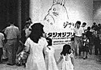

<html>
<head><meta http-equiv="Content-Type" content="text/html; charset=UTF-8">
<script>
  (function(i,s,o,g,r,a,m){i['GoogleAnalyticsObject']=r;i[r]=i[r]||function(){
  (i[r].q=i[r].q||[]).push(arguments)},i[r].l=1*new Date();a=s.createElement(o),
  m=s.getElementsByTagName(o)[0];a.async=1;a.src=g;m.parentNode.insertBefore(a,m)
  })(window,document,'script','https://www.google-analytics.com/analytics.js','ga');
  ga('create', 'UA-143959-3', 'auto');
  ga('require', 'linkid', 'linkid.js');
  ga('require', 'displayfeatures');
  ga('send', 'pageview');
</script>
<title>1996年8月 - 映画『もののけ姫』制作日誌</title>
</head>
<body bgcolor="#ffffff" link="#336699" vlink="#336699">


<font size=5 color=Blue >制作日誌　1996年8月</font><br>
<p>
<br>
<p>
96.8.02（金）<br>
　朝11時すぎより徳間社長を迎えて会社総会が開かれる。話しのメインはディズニーとの提携。<br>
<p>
96.8.03（土） <br>
　宮崎監督が息子の結婚を前に、嫁の実家、山形まで行ってしまったらしい。聞いてないよ～。<br>
<p>
96.8.05（月）<br>
　今日から会社の夏休み。<br>
　昼過ぎには宮崎監督が出勤するはずだったが、いっこうに来ない。夕方家に電話してみたが、下の息子さんから「何時帰ってくるのか分からない」との返事。夜にようやく連絡がついたが、なんでも途中で帰ってこようと思っていたけど、抜けるに抜けられなかったらしい。<br>
<p>
96.8.06（火） <br>
　ラッシュチェックを行う。リテーク多数。<br>
<p>
96.8.07（水） <br>
　本日、ＣＧ部と撮影部の奥井さんが、アメリカへディズニースタジオ見学に出発するが、早朝ディズニーから「今週アメリカに来てもらってもみんなシーグラフに出席しているので会えない。来週なら大丈夫だが」とFAXが届く。あわてて奥井さんに連絡するもすでに家は出た後。なんとか箱崎で捕まえたが、もうどうしようもないので、とにかくアメリカに行ってみるとのこと、なんとかなればいいけど。<br>
<p>
96.8.08（木）<br>
　ディズニーに対し、大森さんが引き続き交渉を進めたが、やはり今週会うことができないという。ただ来週の月曜日なら時間を作れるという回答を得る。これを奥井さん一行に伝えようと、宿泊先の「ユニバーサル・シェラトン」にTELするが、そんな方々はいないという返事。また、シーグラフに出席後、チケットが取れずにニューオリンズに足止めを食らっている菅野さんから「奥井さんに連絡を取ろうとユニバーサル・シェラトンにTELしたらいないと言われた。どうなってんの？」と国際電話が入る。うーん謎だ。所謂行方不明。<br>
　夜7時から屋上でジブリ北海道コンビ、出版部野崎と制作部田中主催によるジンギスカン＆焼き肉パーティを開く。メインスタッフ、美術、仕上げスタッフ、谷藤さん、ガイナックスの有志等総勢訳30人が参加、大盛況となる。中でもジンギスカンの人気は絶大で、近藤喜文さんなどは手放しで大絶賛。ただ一人宮崎監督だけは、「あのベルジンギスカンのたれを付ければ何食ったって同じだ」と悪態をついていました。<br>
<p>
96.8.09（金） <br>
　ちゃんと予定通りに「ユニバーサルシェラトン」に泊まっている奥井さんからTELあり（いないと言われた日もちゃんと泊まっていたらしい）。大森さんらの説得もあってアメリカ時間の金曜日にディズニー見学がＯＫになったそうだ。奥井さんは菅野さんに連絡を付けたがっていたが、奥井さんのホテルにも、ジブリにもその後菅野さんからの連絡はなし。今度は菅野さんが行方不明…。<br>
<p>
96.8.10（土） <br>
　奥井さんからTELあり、ディズニー見学は予想以上にうまくいったらしい。予定より長い約3時間半に渡っていろいろ説明してくれたそうだ。ただし、あいかわらず菅野さんとは連絡が取れず行方不明。勿論ジブリにも何の連絡も無し。奥さんと何処か遊びに行ったか。
<br>
<p>
96.8.12（月） <br>
　本日より宮崎監督、保田さんとも夏休み。<br>
<p>
96.8.21（水） <br>
　昨日で夏休み終了。<br>
　今日から元東小金井村塾の居村君が制作にアルバイトととして参加。<br>
　絵コンテCUT1224~1302まで78CUT309秒アップ。総秒数は104分37秒、1CUT当たりの平均秒数は更に減って4.87秒。<br>
<p>
96.8.24（土） <br>
　テストラッシュを行う。ディダラボッチ、コダマ、シシ神らの濃度のチェック等。<br>
　テレビマンユニオンの浦谷さん、取材で来社。<br>
<p>
96.8.26（月） <br>
　今日は何時もより涼しい為、宮崎監督からクーラー禁止令が出る。<br>
　広島国際アニメーションフェスティバルが昨日終了したため、各国のアニメ関係者からジブリを見学したいとの連絡が次々と入る。明日マレーシアの演出家が来社。<br>
<p>
96.8.27（火） <br>
　マレーシアのアニメーションディレクターハッサンさんが来社、社内見学をして帰る。<br>
<p>
96.8.28（水） <br>
　スイス・ロマンド・テレビのブリュノ・エドラさんが来社、来年にスイスで放送される、日本のアニメのドキュメンタリーで、ジブリを取材したいとの下交渉に来る。<br>
<p>
96.8.29（木） <br>
　田中敦子さん打ち合わせ。CUT1151~1181Bまで33CUT。<br>
<p>
96.8.30（金） <br>
　ラッシュチェックが行われ、引き続きスタッフ向けラッシュ上映を行う。<br>
　ここ何日か話題になっていた、消えた漫画家徳南晴一郎の幻の作品「人間時計」の単行本を、ジブリで1、2を争う漫画マニアのＣＧ部片塰さんが持っていることが発覚する。早速持ってきてもらうが、宮崎監督は一読しただけで「くだらん」と一言。<br>
　名古屋出身の鈴木プロデューサーが巨人対中日戦のテレビ放送にかじりついている。宮崎監督が同点の展開をみて、「今日の感じだと、こりゃ12時までかかるな」と予言。なんとそのとおりに試合が終了したのが11時50分だった。<br>
<p>
96.8.31（土） <br>
　新宿三越美術館の「スタジオジブリ原画展」が今日からスタート。制作部川端、出版部柳沢の両名は昨日から三越に詰めている。今日1日の入場者数は約6,500人と、かなりの大盛況。グッズもかなりの数が売れているとのこと。また図録も1,500から2,000部程売れているという。<br>
<p>
<center>
<br clear=all>
<font size=1>スタジオジブリ原画展・入り口付近の様子</font>
</center>
<table border align="right"><tr><td><a href="969.html">次のページへ</a></td></tr></table><br>
<p><br>
<p>
<hr>
<p>
<table border align=right><tr><td>
<a href="./diary.html">日誌索引へ戻る</a>
</td></tr></table>
<br>
<br>
<table border align=right><tr><td>
<a href="./">「もののけ姫」トップページへ戻る</a>
</td></tr></table>

</body>
</html>